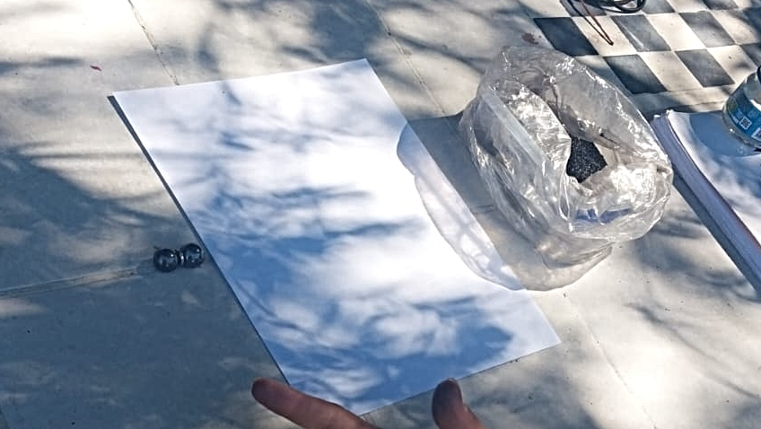
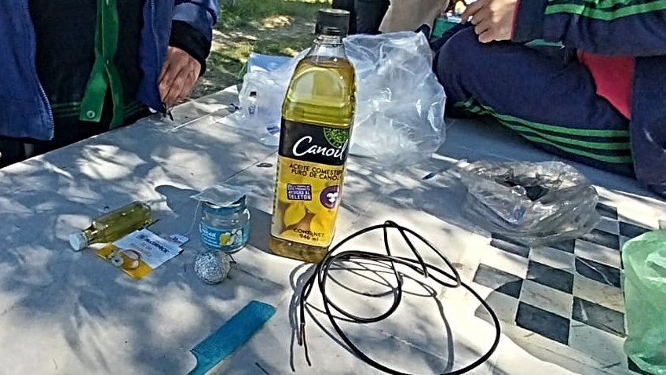
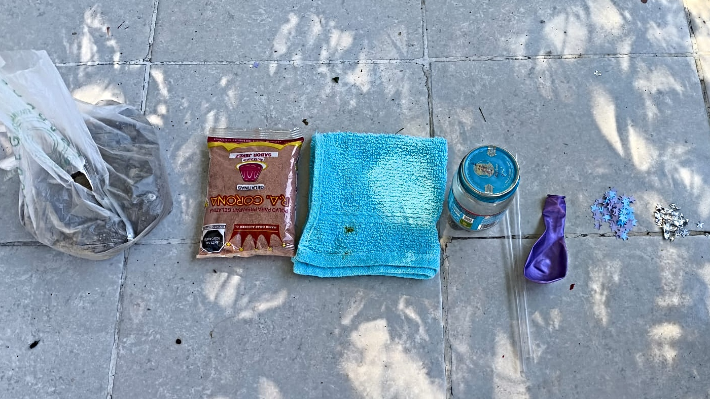
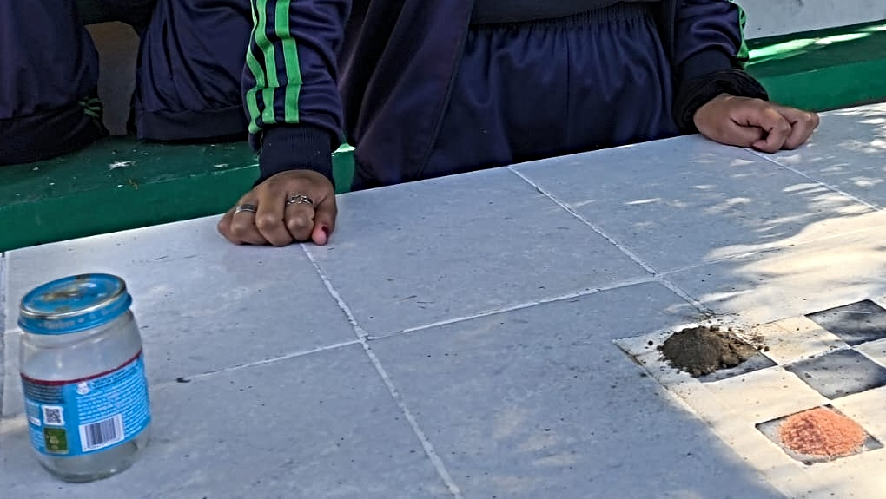
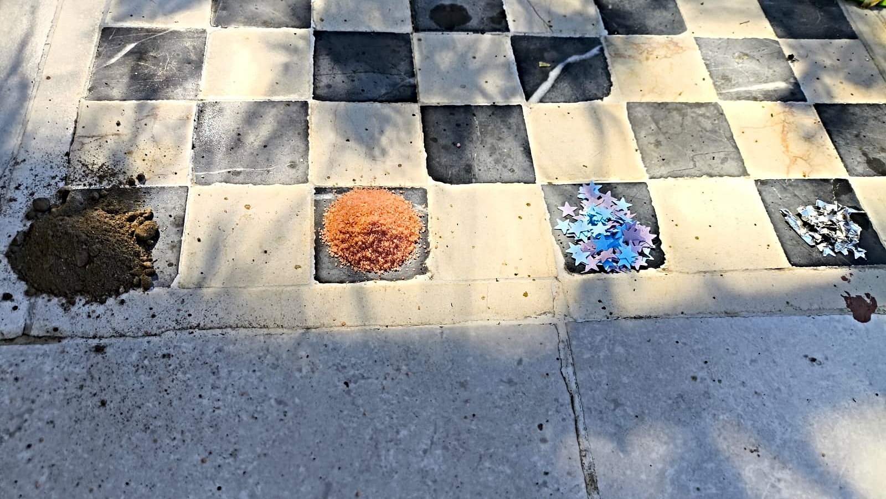
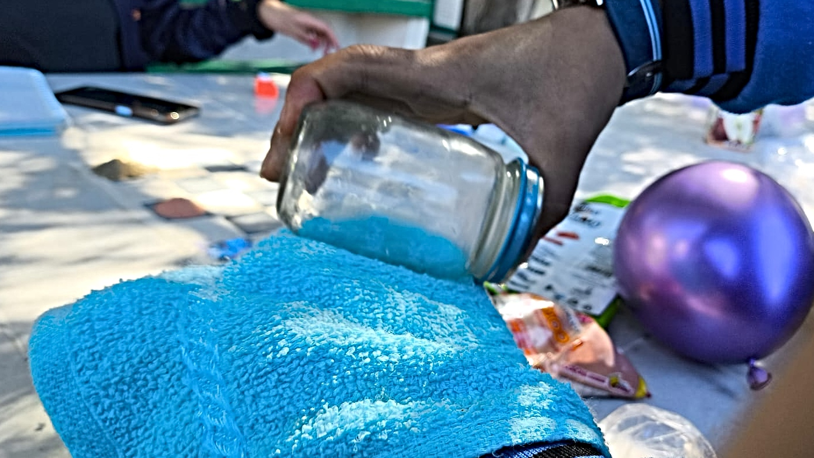

Se coloca un imán debajo de una hoja de papel, posteriormente se espolvorea la limadura de hierro sobre la hoja poco a poco.
Observaciones:
Al colocar la limadura de hierro sobre el papel se formaban lineas alrededor del imán.

Conclusiones:
Aplicaciones en la vida real
Aplicaciones Cotidianas
Electricidad Estática
Aparatos Electrónicos
Electrodomésticos
Aplicaciones Industriales
Condensadores
Pintura Electrostática
Precipitadores Electrostáticos
Aplicaciones Médicas
Electrocardiografía (ECG)
Estimulación Muscular
Fenómenos Naturales
Rayos
Campo Eléctrico Terrestre
Experimento 2 (Campo Magnético)
Materiales:
Frasco de vidrio
Cable de cobre
Aceite de cocina
Bolsita de te
Bola de aluminio
Peine de plástico
Procedimiento:
Primero se cubre o se atraviesa la bola de aluminio con el cable de cobre pelado, posteriormente abrimos la bolsita de te y la vaciamos en el frasco de vidrio, después vaciamos el aceite hasta cubrir la bola de aluminio, en el otro extremo del cable de cobre se coloca el peine y por ultimo se hace con el cabello de una persona.
Observaciones:
Al hacer fricción entre el cabello y el peine, podemos ver en el frasco que las partículas del te se mueven hacia la bola de aluminio, es decir, se mueven hacia el centro por la existencia de un campo eléctrico.

Conclusiones:
¿Donde se aplica en la vida real?
Aplicaciones en la Industria
Motores Eléctricos y Generadores
Transformadores
Separación de Metales
Aplicaciones Médicas
Resonancia Magnética (RM)
Terapia Magnética
Electrónica y Tecnología
Discos Duros
Altavoces y Auriculares
Tarjetas Magnéticas
Aplicaciones Cotidianas
Imanes en Refrigeradores
Juguetes Magnéticos
Cerraduras de Puertas
Experimento 3 (Fuerzas de atracción y repulsión)
Materiales:
Popote
Botella de vidrio
Tierra seca
Globo
Trozos pequeños de aluminio
Trozos pequeños de papel
Franela
Gelatina en polvo
Procedimiento:
Coloca la gelatina, los trozos de papel, los trozos de aluminio y la tierra seca sobre una superficie plana en lugares separados, a continuación infle el globo y amarre, después frote el globo con la franela hasta obtener carga eléctrica y páselo por cada material de la superficie plana.
Observaciones:
Pudimos observar que el globo cargado de estática al pasarlo por cada material hace reacción diferente con cada material, con este experimento se pudo observar las fuerzas de atracción.




Conclusiones:
¿Donde se aplica en la vida real?
Interacciones Magnéticas
Atracción: Los imanes en motores eléctricos y generadores atraen materiales ferromagnéticos como el hierro para convertir energía eléctrica en mecánica (y viceversa).
Repulsión: Se utiliza en trenes de levitación magnética (maglev) para reducir la fricción y aumentar la velocidad al repeler el tren de las vías.
Electricidad y Electrónica
Atracción: En impresoras láser, las partículas de tóner son atraídas por cargas eléctricas para adherirse al papel.
Repulsión: Los pararrayos y sistemas de protección eléctrica desvían las cargas eléctricas mediante la repulsión de cargas de igual signo.
Interacciones Moleculares
Atracción: Las fuerzas intermoleculares, como las de Van der Waals o enlaces de hidrógeno, son responsables de mantener unidas las moléculas en líquidos y sólidos, como el agua y el ADN.
Repulsión: Las fuerzas de repulsión evitan que los átomos colapsen entre sí, permitiendo que las moléculas mantengan sus formas estables.
Propulsión Espacial
Atracción: La fuerza gravitatoria entre planetas y naves espaciales permite realizar maniobras orbitales.
Repulsión: Aunque no es una fuerza repulsiva directa, los motores iónicos expulsan partículas cargadas para propulsar las naves.
Aplicaciones Médicas
Atracción: En tratamientos de cáncer, los campos magnéticos se usan para dirigir nanopartículas cargadas hacia tumores específicos.
Repulsión: En resonancia magnética (MRI), las fuerzas magnéticas alinean y repelen momentáneamente átomos en el cuerpo para obtener imágenes.
Adhesión y Fricción
Atracción: Las fuerzas adhesivas permiten que los adhesivos y cintas se peguen a superficies mediante interacciones moleculares.
Repulsión: Las fuerzas de repulsión se usan en revestimientos antiadherentes (como en utensilios de cocina o ventanas repelentes al agua).
Naturaleza y Biología
Atracción: Las fuerzas gravitatorias permiten la formación de planetas, estrellas y galaxias.
Repulsión: Las cargas eléctricas en proteínas y membranas celulares evitan colisiones y aseguran la estabilidad de las células.
Experimento 4 (Leyes de la electricidad)
Materiales:
Pilas
Brújulas
Tornillos
Alambre de cobre
Procedimiento:
A un tornillo se enreda alrededor del alambre de cobre dejando 2 salidas de corriente, las dos salidas se conectan al lado positivo y negativo de la pila, acercando los tornillos y la brújula.
Observaciones:
Al momento de acercarse a los demás tornillos pudimos ver que los atraía hacia el mismo y con la brújula. La brújula seguía al tornillo conectado a la pila.